CODING AGENTS AS PIXEL WORLD MODELS
traex/GPT-6.1-Sol · 0040
点击播放 · 原生 RGB 像素
逐轮保存的候选
回放视频、检查图与代码变化。
每份候选均可单独播放。实际图片检查记录在下方工具轨迹中。
候选 01播放与检查图
点击播放 · 原生 RGB 像素

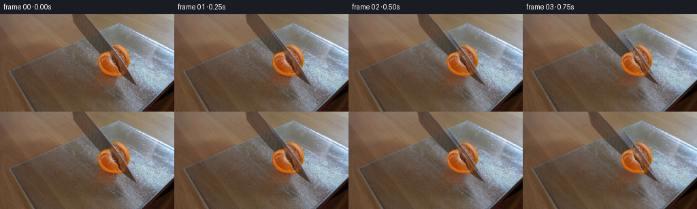
展开代码变化
--- 上一保存版本
+++ 本次保存版本
@@ -0,0 +1,186 @@
+from pathlib import Path
+import math
+import numpy as np
+import cv2
+from PIL import Image, ImageDraw, ImageFilter
+from scipy.ndimage import gaussian_filter, distance_transform_edt
+import artifact_io
+
+ROOT=Path(__file__).resolve().parent
+S=4
+H,W=144,256
+rng=np.random.default_rng(412)
+src=np.asarray(Image.open(ROOT/'first_frame.png').convert('RGB'))
+
+def poly(points, scale=S):
+ im=Image.new('L',(W*scale,H*scale))
+ ImageDraw.Draw(im).polygon([(round(x*scale),round(y*scale)) for x,y in points],fill=255)
+ return np.asarray(im).astype(np.float32)/255
+
+def enlarge(a):
+ return cv2.resize(a,(W*S,H*S),interpolation=cv2.INTER_CUBIC)
+
+# The near and far sides of the citrus, and the steel blade, are separate
+# photographic layers. A small amount of newly revealed pulp is completed
+# from the radial texture of the same fruit, not from a reference image.
+leftpts=[(160.6,54.9),(157,55.9),(153,57.1),(149,59.3),(146,62.5),(144.2,67.1),(144.4,72.8),(146.4,78.6),(150,83.7),(155,87.3),(160.5,90),(166,91.3),(172.4,91.7),(177.8,90.9),(181,89.5),(178.8,87.7),(175.5,83.4),(173.7,78.3),(171.3,75),(168.5,72.8),(165.4,71.6),(164,68.8),(163.7,64.3),(162.4,59.7)]
+rightpts=[(162.5,47.9),(167.1,45.6),(171.8,45.2),(176,46.4),(180,49.2),(183.3,53.5),(186.5,58.9),(188.8,65.5),(190.1,71.9),(189.2,76.1),(187.3,79.8),(184.5,83),(181.8,86.2),(178.8,85.2),(173.5,79.4),(169.7,73),(166.3,66.7),(163.6,60.2),(161.2,54.2)]
+knifepts=[(105.6,-1),(124.2,-1),(199.8,104),(190.2,99.3),(181.2,92.9),(174,86.2),(165.5,77.5),(155.2,66.5),(144.8,55.5),(134,44.3),(123,32.4),(115,23),(108.9,15.9),(107.4,10)]
+leftmask=poly(leftpts)
+rightmask=poly(rightpts)
+kmask=poly(knifepts)
+image=enlarge(src).astype(np.float32)
+# Where the knife is obscured by the near piece, extend its brushed steel.
+knifehole=(kmask*leftmask>.25).astype(np.uint8)
+knownk=(kmask>.5)&(leftmask<.1)
+_,inds=distance_transform_edt(~knownk, return_indices=True)
+knife_rgb=image[inds[0],inds[1]].copy()
+knife_rgb=np.where(knownk[...,None],image,knife_rgb)
+# Allow heel motion below the top of the frame by providing a short extension.
+pad=180
+knife_col=np.pad(knife_rgb,((pad,0),(0,0),(0,0)),mode='edge')
+knife_alpha=np.pad(kmask,((pad,0),(0,0)))
+# Blade edges continued above the crop. The handle remains outside the shot.
+extra=Image.new('L',(W*S,H*S+pad))
+d=ImageDraw.Draw(extra)
+extpoly=[(106*S-0.16*pad,0),(124*S-.73*pad,0),(124*S,pad),(106*S,pad)]
+d.polygon(extpoly, fill=255)
+knife_alpha[:pad]=np.asarray(extra)[:pad]/255
+for yy in range(pad):
+ dest=np.arange(W*S)
+ sx=np.clip(np.rint(dest+.4*(pad-yy)).astype(int),0,W*S-1)
+ knife_col[yy]=knife_rgb[0,sx]
+
+# Restore just the small areas which will become visible as the knife exits.
+rm=((kmask+leftmask+rightmask)>.05).astype(np.uint8)
+rm=cv2.resize(rm,(W,H),interpolation=cv2.INTER_AREA)
+rm=(rm>0).astype(np.uint8)*255
+# Include the old soft contact shadow in the restored patch.
+shadowmask=np.zeros((H,W),np.uint8)
+cv2.ellipse(shadowmask,(166,89),(27,12),18,0,360,255,-1)
+rm=np.maximum(rm,shadowmask)
+rm=cv2.dilate(rm,np.ones((3,3),np.uint8),iterations=1)
+bg=cv2.inpaint(src,rm,6,cv2.INPAINT_TELEA)
+# Recover the fine frosted glass grain lost during inpainting, using nearby
+# clean pixels on the very same board and preserving its broad illumination.
+y,x=np.mgrid[:H,:W]
+inside=(y>81.8-.386*x)&(x>16)&(y<160)
+texture=src.astype(float)-gaussian_filter(src.astype(float),(1.15,1.15,0))
+sample=np.roll(texture,32,axis=1)
+restored=bg.astype(float)+sample*.58
+soft=cv2.GaussianBlur((rm/255).astype(np.float32),(0,0),.65)*inside
+bg=bg*(1-soft[...,None])+restored*soft[...,None]
+bg=np.clip(bg,0,255).astype(np.uint8)
+background=enlarge(bg).astype(np.float32)
+
+# Reconstruct the back wedge's flesh only where the knife originally hid it.
+visible=(leftmask>.7)|((rightmask>.7)&(kmask<.15))
+yh,xh=np.mgrid[:H*S,:W*S]
+xx=xh/S; yy=yh/S
+cx,cy=165.6,69.1
+rr=np.hypot(xx-cx,yy-cy)
+ang=np.arctan2(yy-cy,xx-cx)
+filled=image.copy()
+missing=(rightmask>.01)&(kmask>.05)
+# Select another angular segment of this fruit at the same radius.
+best=np.full((H*S,W*S),1e6,np.float32)
+fillcol=np.zeros_like(image)
+for delta in [np.pi,2*np.pi/3,-2*np.pi/3,np.pi/2,-np.pi/2,np.pi/3,-np.pi/3,.3,-.3]:
+ sx=(cx+rr*np.cos(ang+delta))*S
+ sy=(cy+rr*np.sin(ang+delta))*S
+ safe=(sx>=0)&(sx<W*S)&(sy>=0)&(sy<H*S)
+ ix=np.clip(np.rint(sx).astype(int),0,W*S-1)
+ iy=np.clip(np.rint(sy).astype(int),0,H*S-1)
+ rgb=image[iy,ix]
+ usable=visible[iy,ix]&safe&(rgb[...,0]>rgb[...,1]*1.10)&(rgb[...,1]>rgb[...,2]*1.2)
+ cost=abs(delta)+rng.uniform(0,.05,(H*S,W*S))
+ take=usable&(cost<best)
+ fillcol[take]=rgb[take]
+ best[take]=cost[take]
+# Center under the knife: pale fibrous pith, small continuous transition.
+failed=best>1e5
+_,inds=distance_transform_edt(~visible,return_indices=True)
+fillcol[failed]=image[inds[0][failed],inds[1][failed]]
+noise=gaussian_filter(rng.normal(0,1,(H*S,W*S)),.65)
+# Subdued septa radiate from the center; the original segment texture is retained.
+septa=np.exp(-((np.sin(5*(ang+.20))*rr)/.57)**2)*.20
+pith=np.exp(-(rr/3.6)**2)*.72
+w=np.clip(septa+pith,0,.82)
+completed=fillcol*(1-w[...,None])+np.array([212,167,106])[None,None,:]*w[...,None]
+completed+=noise[...,None]*3
+filled[missing]=completed[missing]
+right_rgb=filled
+left_rgb=image.copy()
+# A slender moist freshly cut edge has thickness, not a black outlined gap.
+# It lies behind the original photographed flesh surface.
+
+def shadow_layer(dx,dy,scale=1,rotation=0):
+ sh=Image.new('L',(W*S,H*S))
+ d=ImageDraw.Draw(sh)
+ d.ellipse(((145+dx)*S,(83+dy)*S,(182+dx)*S,(99+dy)*S),fill=78)
+ sh=sh.filter(ImageFilter.GaussianBlur(3.0*S))
+ return np.asarray(sh)/255
+
+def warp_layer(rgb,alpha,angle,dx,dy,center=(167,72)):
+ M=cv2.getRotationMatrix2D((center[0]*S,center[1]*S),angle,1)
+ M[:,2]+=[dx*S,dy*S]
+ a=cv2.warpAffine(alpha.astype(np.float32),M,(W*S,H*S),flags=cv2.INTER_LINEAR,borderMode=cv2.BORDER_CONSTANT)
+ c=cv2.warpAffine((rgb*alpha[...,None]).astype(np.float32),M,(W*S,H*S),flags=cv2.INTER_LINEAR,borderMode=cv2.BORDER_CONSTANT)
+ return c,a
+
+def composite(canvas,c,a):
+ return canvas*(1-a[...,None])+c
+
+def smooth(z):
+ z=np.clip(z,0,1)
+ return z*z*(3-2*z)
+
+def render(t):
+ # Real-time downward rocking cut about the tip, followed by extraction.
+ cut=smooth(t/1.65)
+ pull=smooth((t-2.0)/1.65)
+ settle=smooth((t-1.2)/1.8)
+ ldx=-4.6*settle; ldy=2.5*settle
+ rdx=3.8*settle; rdy=-.3*settle
+ la=6.5*settle; ra=-4.7*settle
+ canvas=background.copy()
+ sh=shadow_layer(ldx,ldy)
+ sh2=shadow_layer(rdx+3,rdy-5)
+ shadow=np.maximum(sh,sh2*.65)
+ canvas*=1-shadow[...,None]*.32
+ rc,am=warp_layer(right_rgb,rightmask,ra,rdx,rdy,(172,71))
+ canvas=composite(canvas,rc,am)
+ # Rotation lowers the heel without letting the tip penetrate the board.
+ M=cv2.getRotationMatrix2D((199.5*S,104*S+pad),11.0*cut,1.0)
+ # Coordinate offset for the padded photo and a lift along the blade.
+ M[1,2]-=pad
+ M[:,2]+=np.array([-91*pull*S,-124*pull*S])
+ ka=cv2.warpAffine(knife_alpha,M,(W*S,H*S),flags=cv2.INTER_LINEAR)
+ kc=cv2.warpAffine(knife_col*knife_alpha[...,None],M,(W*S,H*S),flags=cv2.INTER_LINEAR)
+ # Very subtle blade shadow on the frosted board; not on the wood.
+ bshadow=cv2.GaussianBlur(ka,(0,0),1.4*S)
+ board=enlarge(inside.astype(np.float32))
+ canvas*=1-(bshadow*board*.085)[...,None]
+ canvas=composite(canvas,kc,ka)
+ lc,al=warp_layer(left_rgb,leftmask,la,ldx,ldy,(161,77))
+ canvas=composite(canvas,lc,al)
+ result=cv2.resize(np.clip(canvas,0,255),(W,H),interpolation=cv2.INTER_AREA)
+ return result
+
+base=render(0)
+frames=[]
+for i in range(20):
+ if i==0:
+ frame=src.copy()
+ else:
+ t=i/4
+ frame=render(t)
+ # Correct boundary subpixels of the extracted photographic layers, fading
+ # the correction while the cut starts moving rather than popping.
+ frame+=(src.astype(np.float32)-base)*(1-smooth(t/.8))
+ frame=np.clip(np.rint(frame),0,255).astype(np.uint8)
+ frames.append(frame)
+frames=np.stack(frames)
+artifact_io.save(frames,ROOT)
+Image.fromarray(bg).save(ROOT/'.tmp/background.png')
+Image.fromarray(np.clip(right_rgb,0,255).astype(np.uint8)).resize((W,H)).save(ROOT/'.tmp/reconstruct.png')
候选 02播放与检查图
点击播放 · 原生 RGB 像素
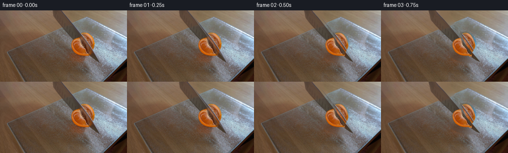
展开代码变化
--- 上一保存版本 +++ 本次保存版本 @@ -27,6 +27,7 @@ rightpts=[(162.5,47.9),(167.1,45.6),(171.8,45.2),(176,46.4),(180,49.2),(183.3,53.5),(186.5,58.9),(188.8,65.5),(190.1,71.9),(189.2,76.1),(187.3,79.8),(184.5,83),(181.8,86.2),(178.8,85.2),(173.5,79.4),(169.7,73),(166.3,66.7),(163.6,60.2),(161.2,54.2)] knifepts=[(105.6,-1),(124.2,-1),(199.8,104),(190.2,99.3),(181.2,92.9),(174,86.2),(165.5,77.5),(155.2,66.5),(144.8,55.5),(134,44.3),(123,32.4),(115,23),(108.9,15.9),(107.4,10)] leftmask=poly(leftpts) +rightpts=[(162.4,47.7),(167.1,45.6),(171.8,45.2),(176,46.4),(180,49.2),(183.3,53.5),(186.5,58.9),(188.8,65.5),(190.1,71.9),(189.2,76.1),(187.3,79.8),(184.5,83),(180.4,88.2),(175.0,78.5),(170.2,68.5),(165.5,56.9)] rightmask=poly(rightpts) kmask=poly(knifepts) image=enlarge(src).astype(np.float32) @@ -36,6 +37,15 @@ _,inds=distance_transform_edt(~knownk, return_indices=True) knife_rgb=image[inds[0],inds[1]].copy() knife_rgb=np.where(knownk[...,None],image,knife_rgb) +# Complete the portion reflected in the original fruit once it leaves the fruit. +metal=image.copy() +metal_mask=(kmask>.5)&(yy if False else np.ones_like(kmask,dtype=bool)) +ny,nx=np.mgrid[:H*S,:W*S] +blue=(knife_rgb[...,0]-knife_rgb[...,2])>35 +nearfruit=(ny>46*S)&(ny<92*S)&(nx<184*S) +# Photographic steel immediately above the citrus supplies its material. +replacement=cv2.remap(image,(nx-27*S).astype(np.float32),(ny-32*S).astype(np.float32),cv2.INTER_LINEAR) +knife_rgb=np.where((blue&nearfruit)[...,None],replacement,knife_rgb) # Allow heel motion below the top of the frame by providing a short extension. pad=180 knife_col=np.pad(knife_rgb,((pad,0),(0,0),(0,0)),mode='edge') @@ -59,29 +69,43 @@ shadowmask=np.zeros((H,W),np.uint8) cv2.ellipse(shadowmask,(166,89),(27,12),18,0,360,255,-1) rm=np.maximum(rm,shadowmask) -rm=cv2.dilate(rm,np.ones((3,3),np.uint8),iterations=1) -bg=cv2.inpaint(src,rm,6,cv2.INPAINT_TELEA) -# Recover the fine frosted glass grain lost during inpainting, using nearby -# clean pixels on the very same board and preserving its broad illumination. +rm=cv2.dilate(rm,np.ones((3,3),np.uint8),iterations=3) +# Use wood inpainting and a clean patch of the glass, shifted along the +# board's long edge, where frosted texture is otherwise unrecoverable. +bg=cv2.inpaint(src,rm,7,cv2.INPAINT_TELEA) y,x=np.mgrid[:H,:W] -inside=(y>81.8-.386*x)&(x>16)&(y<160) +edge=81.8-.386*x +inside=(y>edge)&(x>16)&(y<160) texture=src.astype(float)-gaussian_filter(src.astype(float),(1.15,1.15,0)) -sample=np.roll(texture,32,axis=1) -restored=bg.astype(float)+sample*.58 -soft=cv2.GaussianBlur((rm/255).astype(np.float32),(0,0),.65)*inside -bg=bg*(1-soft[...,None])+restored*soft[...,None] +# Sample a clean parallel strip to the left. Match the gradual warm/cool +# reflection gradient locally at the periphery of the erased region. +sx=np.clip(x-49,0,W-1).astype(np.float32) +sy=np.clip(y+19,0,H-1).astype(np.float32) +donor=cv2.remap(src.astype(np.float32),sx,sy,cv2.INTER_LINEAR) +diff=src.astype(float)-donor +known=(rm==0)&inside +weight=gaussian_filter(known.astype(float),9) +correction=np.stack([gaussian_filter(diff[...,c]*known,9)/(weight+.00001) for c in range(3)],-1) +restored=np.clip(donor+correction,0,255) +# A narrow transition at the glass edge keeps the raised bevel continuous. +boardmix=np.clip((y-edge-1)/3,0,1)*inside +blend=cv2.GaussianBlur((rm/255).astype(np.float32),(0,0),.55)*boardmix +bg=bg*(1-blend[...,None])+restored*blend[...,None] bg=np.clip(bg,0,255).astype(np.uint8) background=enlarge(bg).astype(np.float32) # Reconstruct the back wedge's flesh only where the knife originally hid it. -visible=(leftmask>.7)|((rightmask>.7)&(kmask<.15)) +expandedk=cv2.dilate(kmask,np.ones((9,9),np.uint8)) +visible=((leftmask>.8)|((rightmask>.8)&(expandedk<.01))) +visible &= (image[...,0]>image[...,1]*1.30)&(image[...,1]>image[...,2]*1.40) +visible &= (cv2.erode((leftmask>.7).astype(np.uint8),np.ones((5,5),np.uint8))>0)|((rightmask>.8)&(expandedk<.01)) yh,xh=np.mgrid[:H*S,:W*S] xx=xh/S; yy=yh/S cx,cy=165.6,69.1 rr=np.hypot(xx-cx,yy-cy) ang=np.arctan2(yy-cy,xx-cx) filled=image.copy() -missing=(rightmask>.01)&(kmask>.05) +missing=(rightmask>.01)&(expandedk>.01) # Select another angular segment of this fruit at the same radius. best=np.full((H*S,W*S),1e6,np.float32) fillcol=np.zeros_like(image)
候选 03播放与检查图
点击播放 · 原生 RGB 像素
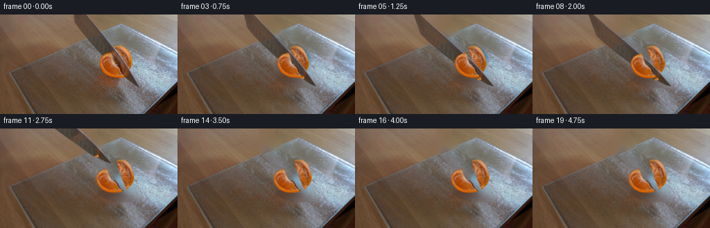
展开代码变化
--- 上一保存版本 +++ 本次保存版本 @@ -25,7 +25,7 @@ # from the radial texture of the same fruit, not from a reference image. leftpts=[(160.6,54.9),(157,55.9),(153,57.1),(149,59.3),(146,62.5),(144.2,67.1),(144.4,72.8),(146.4,78.6),(150,83.7),(155,87.3),(160.5,90),(166,91.3),(172.4,91.7),(177.8,90.9),(181,89.5),(178.8,87.7),(175.5,83.4),(173.7,78.3),(171.3,75),(168.5,72.8),(165.4,71.6),(164,68.8),(163.7,64.3),(162.4,59.7)] rightpts=[(162.5,47.9),(167.1,45.6),(171.8,45.2),(176,46.4),(180,49.2),(183.3,53.5),(186.5,58.9),(188.8,65.5),(190.1,71.9),(189.2,76.1),(187.3,79.8),(184.5,83),(181.8,86.2),(178.8,85.2),(173.5,79.4),(169.7,73),(166.3,66.7),(163.6,60.2),(161.2,54.2)] -knifepts=[(105.6,-1),(124.2,-1),(199.8,104),(190.2,99.3),(181.2,92.9),(174,86.2),(165.5,77.5),(155.2,66.5),(144.8,55.5),(134,44.3),(123,32.4),(115,23),(108.9,15.9),(107.4,10)] +knifepts=[(105.6,-1),(123.6,-1),(132.4,10),(140.7,20),(149.3,30),(157.3,40),(165.9,50),(174,60),(180.9,70),(187.4,80),(193.1,90),(198.7,100),(199.8,104),(190.2,99.3),(181.2,92.9),(174,86.2),(165.5,77.5),(155.2,66.5),(144.8,55.5),(134,44.3),(123,32.4),(115,23),(108.9,15.9),(107.4,10)] leftmask=poly(leftpts) rightpts=[(162.4,47.7),(167.1,45.6),(171.8,45.2),(176,46.4),(180,49.2),(183.3,53.5),(186.5,58.9),(188.8,65.5),(190.1,71.9),(189.2,76.1),(187.3,79.8),(184.5,83),(180.4,88.2),(175.0,78.5),(170.2,68.5),(165.5,56.9)] rightmask=poly(rightpts) @@ -38,8 +38,6 @@ knife_rgb=image[inds[0],inds[1]].copy() knife_rgb=np.where(knownk[...,None],image,knife_rgb) # Complete the portion reflected in the original fruit once it leaves the fruit. -metal=image.copy() -metal_mask=(kmask>.5)&(yy if False else np.ones_like(kmask,dtype=bool)) ny,nx=np.mgrid[:H*S,:W*S] blue=(knife_rgb[...,0]-knife_rgb[...,2])>35 nearfruit=(ny>46*S)&(ny<92*S)&(nx<184*S)
候选 04播放与检查图
点击播放 · 原生 RGB 像素
展开代码变化
--- 上一保存版本 +++ 本次保存版本 @@ -26,14 +26,15 @@ leftpts=[(160.6,54.9),(157,55.9),(153,57.1),(149,59.3),(146,62.5),(144.2,67.1),(144.4,72.8),(146.4,78.6),(150,83.7),(155,87.3),(160.5,90),(166,91.3),(172.4,91.7),(177.8,90.9),(181,89.5),(178.8,87.7),(175.5,83.4),(173.7,78.3),(171.3,75),(168.5,72.8),(165.4,71.6),(164,68.8),(163.7,64.3),(162.4,59.7)] rightpts=[(162.5,47.9),(167.1,45.6),(171.8,45.2),(176,46.4),(180,49.2),(183.3,53.5),(186.5,58.9),(188.8,65.5),(190.1,71.9),(189.2,76.1),(187.3,79.8),(184.5,83),(181.8,86.2),(178.8,85.2),(173.5,79.4),(169.7,73),(166.3,66.7),(163.6,60.2),(161.2,54.2)] knifepts=[(105.6,-1),(123.6,-1),(132.4,10),(140.7,20),(149.3,30),(157.3,40),(165.9,50),(174,60),(180.9,70),(187.4,80),(193.1,90),(198.7,100),(199.8,104),(190.2,99.3),(181.2,92.9),(174,86.2),(165.5,77.5),(155.2,66.5),(144.8,55.5),(134,44.3),(123,32.4),(115,23),(108.9,15.9),(107.4,10)] -leftmask=poly(leftpts) +origleftmask=poly(leftpts) +leftmask=poly(leftpts[:16]) rightpts=[(162.4,47.7),(167.1,45.6),(171.8,45.2),(176,46.4),(180,49.2),(183.3,53.5),(186.5,58.9),(188.8,65.5),(190.1,71.9),(189.2,76.1),(187.3,79.8),(184.5,83),(180.4,88.2),(175.0,78.5),(170.2,68.5),(165.5,56.9)] rightmask=poly(rightpts) kmask=poly(knifepts) image=enlarge(src).astype(np.float32) # Where the knife is obscured by the near piece, extend its brushed steel. -knifehole=(kmask*leftmask>.25).astype(np.uint8) -knownk=(kmask>.5)&(leftmask<.1) +knifehole=(kmask*origleftmask>.25).astype(np.uint8) +knownk=(kmask>.5)&(origleftmask<.1) _,inds=distance_transform_edt(~knownk, return_indices=True) knife_rgb=image[inds[0],inds[1]].copy() knife_rgb=np.where(knownk[...,None],image,knife_rgb) @@ -94,9 +95,9 @@ # Reconstruct the back wedge's flesh only where the knife originally hid it. expandedk=cv2.dilate(kmask,np.ones((9,9),np.uint8)) -visible=((leftmask>.8)|((rightmask>.8)&(expandedk<.01))) +visible=((origleftmask>.8)|((rightmask>.8)&(expandedk<.01))) visible &= (image[...,0]>image[...,1]*1.30)&(image[...,1]>image[...,2]*1.40) -visible &= (cv2.erode((leftmask>.7).astype(np.uint8),np.ones((5,5),np.uint8))>0)|((rightmask>.8)&(expandedk<.01)) +visible &= (cv2.erode((origleftmask>.7).astype(np.uint8),np.ones((5,5),np.uint8))>0)|((rightmask>.8)&(expandedk<.01)) yh,xh=np.mgrid[:H*S,:W*S] xx=xh/S; yy=yh/S cx,cy=165.6,69.1 @@ -133,6 +134,12 @@ filled[missing]=completed[missing] right_rgb=filled left_rgb=image.copy() +left_missing=(leftmask>.01)&(origleftmask<.75) +left_rgb[left_missing]=completed[left_missing] +# A thin pale membrane follows the new cut at the center of the wedge. +cutdist=np.abs(34.6*(xx-160.6)-20.4*(yy-54.9))/40.17 +thin=np.exp(-(cutdist/.55)**2)*.32*(leftmask>.01)*(origleftmask<.75) +left_rgb=left_rgb*(1-thin[...,None])+np.array([219,166,96])*thin[...,None] # A slender moist freshly cut edge has thickness, not a black outlined gap. # It lies behind the original photographed flesh surface.
候选 05播放与检查图
候选 06播放与检查图
点击播放 · 原生 RGB 像素
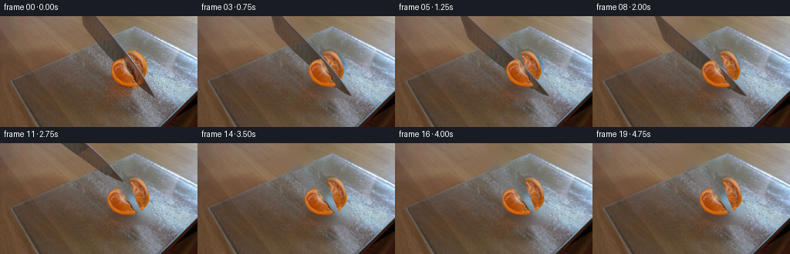
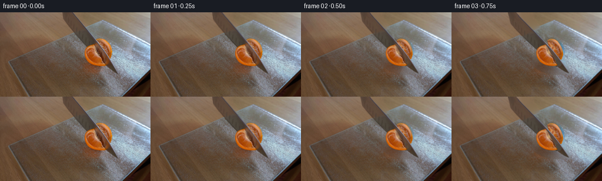
展开代码变化
--- 上一保存版本 +++ 本次保存版本 @@ -41,9 +41,9 @@ # Complete the portion reflected in the original fruit once it leaves the fruit. ny,nx=np.mgrid[:H*S,:W*S] blue=(knife_rgb[...,0]-knife_rgb[...,2])>35 -nearfruit=(ny>46*S)&(ny<92*S)&(nx<184*S) +nearfruit=(ny>51*S)&(ny<99*S)&(nx<195*S) # Photographic steel immediately above the citrus supplies its material. -replacement=cv2.remap(image,(nx-27*S).astype(np.float32),(ny-32*S).astype(np.float32),cv2.INTER_LINEAR) +replacement=cv2.remap(image,(nx-39*S).astype(np.float32),(ny-48*S).astype(np.float32),cv2.INTER_LINEAR) knife_rgb=np.where((blue&nearfruit)[...,None],replacement,knife_rgb) # Allow heel motion below the top of the frame by providing a short extension. pad=180
候选 07播放与检查图
点击播放 · 原生 RGB 像素
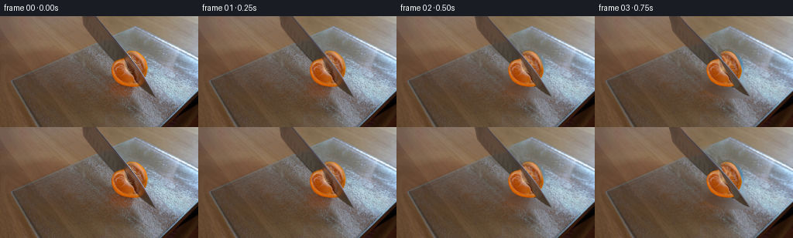
展开代码变化
--- 上一保存版本 +++ 本次保存版本 @@ -90,6 +90,14 @@ boardmix=np.clip((y-edge-1)/3,0,1)*inside blend=cv2.GaussianBlur((rm/255).astype(np.float32),(0,0),.55)*boardmix bg=bg*(1-blend[...,None])+restored*blend[...,None] +# Reuse unobstructed tabletop grain for the thin heel footprint above glass. +wood_donor=cv2.remap(src.astype(np.float32),np.clip(x-44,0,W-1).astype(np.float32),np.clip(y+4,0,H-1).astype(np.float32),cv2.INTER_LINEAR) +wood_known=(rm==0)&(y<edge-2) +ww=gaussian_filter(wood_known.astype(float),10) +wd=src.astype(float)-wood_donor +wc=np.stack([gaussian_filter(wd[...,c]*wood_known,10)/(ww+.00001) for c in range(3)],-1) +wb=cv2.GaussianBlur((rm/255).astype(np.float32),(0,0),.55)*np.clip((edge-y-2)/4,0,1) +bg=bg*(1-wb[...,None])+np.clip(wood_donor+wc,0,255)*wb[...,None] bg=np.clip(bg,0,255).astype(np.uint8) background=enlarge(bg).astype(np.float32)
可观测工具轨迹
实际执行的命令与返回图片。
命令 1exit 0
/bin/bash -lc "ls -la && cat prompt.txt && printf '\\n--- RULES ---\\n' && cat GENERATION_RULES.md"
命令 2exit 0
/bin/bash -lc "cat artifact_io.py && python - <<'PY'
from PIL import Image
im=Image.open('first_frame.png'); print(im.size); im.resize((1024,576)).save('.tmp/enlarged.png')
PY"命令 3exit 0
/bin/bash -lc "python - <<'PY' import importlib.util for mod in ['cv2','scipy','numpy','PIL']: print(mod, bool(importlib.util.find_spec(mod))) PY"
命令 4exit 0
/bin/bash -lc "python - <<'PY'
from PIL import Image,ImageDraw
im=Image.open('first_frame.png').resize((1024,576))
d=ImageDraw.Draw(im)
for x in range(100,205,5):
d.line((x*4,0,x*4,440), fill=(255,70,70),width=1);d.text((x*4+1,420),str(x),fill='white')
for y in range(0,110,5):
d.line((400,y*4,815,y*4),fill=(255,70,70),width=1);d.text((800,y*4),str(y),fill='white')
im.save('.tmp/grid.png')
PY"命令 5exit 0
/bin/bash -lc "python - <<'PY'
from PIL import Image
im=Image.open('first_frame.png'); im.crop((137,40,197,99)).resize((600,590)).save('.tmp/fruit.png')
PY"命令 6exit 0
/bin/bash -lc "python - <<'PY'
from PIL import Image
im=Image.open('first_frame.png')
im.crop((95,0,204,110)).resize((654,660),Image.Resampling.NEAREST).save('.tmp/knife.png')
PY"命令 7exit 0
/bin/bash -lc "cat > generate.py <<'PY'
from pathlib import Path
import math
import numpy as np
import cv2
from PIL import Image, ImageDraw, ImageFilter
from scipy.ndimage import gaussian_filter, distance_transform_edt
import artifact_io
ROOT=Path(__file__).resolve().parent
S=4
H,W=144,256
rng=np.random.default_rng(412)
src=np.asarray(Image.open(ROOT/'first_frame.png').convert('RGB'))
def poly(points, scale=S):
im=Image.new('L',(W*scale,H*scale))
ImageDraw.Draw(im).polygon([(round(x*scale),round(y*scale)) for x,y in points],fill=255)
return np.asarray(im).astype(np.float32)/255
def enlarge(a):
return cv2.resize(a,(W*S,H*S),interpolation=cv2.INTER_CUBIC)
# The near and far sides of the citrus, and the steel blade, are separate
# photographic layers. A small amount of newly revealed pulp is completed
# from the radial texture of the same fruit, not from a reference image.
leftpts=[(160.6,54.9),(157,55.9),(153,57.1),(149,59.3),(146,62.5),(144.2,67.1),(144.4,72.8),(146.4,78.6),(150,83.7),(155,87.3),(160.5,90),(166,91.3),(172.4,91.7),(177.8,90.9),(181,89.5),(178.8,87.7),(175.5,83.4),(173.7,78.3),(171.3,75),(168.5,72.8),(165.4,71.6),(164,68.8),(163.7,64.3),(162.4,59.7)]
rightpts=[(162.5,47.9),(167.1,45.6),(171.8,45.2),(176,46.4),(180,49.2),(183.3,53.5),(186.5,58.9),(188.8,65.5),(190.1,71.9),(189.2,76.1),(187.3,79.8),(184.5,83),(181.8,86.2),(178.8,85.2),(173.5,79.4),(169.7,73),(166.3,66.7),(163.6,60.2),(161.2,54.2)]
knifepts=[(105.6,-1),(124.2,-1),(199.8,104),(190.2,99.3),(181.2,92.9),(174,86.2),(165.5,77.5),(155.2,66.5),(144.8,55.5),(134,44.3),(123,32.4),(115,23),(108.9,15.9),(107.4,10)]
leftmask=poly(leftpts)
rightmask=poly(rightpts)
kmask=poly(knifepts)
image=enlarge(src).astype(np.float32)
# Where the knife is obscured by the near piece, extend its brushed steel.
knifehole=(kmask*leftmask>.25).astype(np.uint8)
knownk=(kmask>.5)&(leftmask<.1)
_,inds=distance_transform_edt(~knownk, return_indices=True)
knife_rgb=image[inds[0],inds[1]].copy()
knife_rgb=np.where(knownk[...,None],image,knife_rgb)
# Allow heel motion below the top of the frame by providing a short extension.
pad=180
knife_col=np.pad(knife_rgb,((pad,0),(0,0),(0,0)),mode='edge')
knife_alpha=np.pad(kmask,((pad,0),(0,0)))
# Blade edges continued above the crop. The handle remains outside the shot.
extra=Image.new('L',(W*S,H*S+pad))
d=ImageDraw.Draw(extra)
extpoly=[(106*S-0.16*pad,0),(124*S-.73*pad,0),(124*S,pad),(106*S,pad)]
d.polygon(extpoly, fill=255)
knife_alpha[:pad]=np.asarray(extra)[:pad]/255
for yy in range(pad):
dest=np.arange(W*S)
sx=np.clip(np.rint(dest+.4*(pad-yy)).astype(int),0,W*S-1)
knife_col[yy]=knife_rgb[0,sx]
# Restore just the small areas which will become visible as the knife exits.
rm=((kmask+leftmask+rightmask)>.05).astype(np.uint8)
rm=cv2.resize(rm,(W,H),interpolation=cv2.INTER_AREA)
rm=(rm>0).astype(np.uint8)*255
# Include the old soft contact shadow in the restored patch.
shadowmask=np.zeros((H,W),np.uint8)
cv2.ellipse(shadowmask,(166,89),(27,12),18,0,360,255,-1)
rm=np.maximum(rm,shadowmask)
rm=cv2.dilate(rm,np.ones((3,3),np.uint8),iterations=1)
bg=cv2.inpaint(src,rm,6,cv2.INPAINT_TELEA)
# Recover the fine frosted glass grain lost during inpainting, using nearby
# clean pixels on the very same board and preserving its broad illumination.
y,x=np.mgrid[:H,:W]
inside=(y>81.8-.386*x)&(x>16)&(y<160)
texture=src.astype(float)-gaussian_filter(src.astype(float),(1.15,1.15,0))
sample=np.roll(texture,32,axis=1)
restored=bg.astype(float)+sample*.58
soft=cv2.GaussianBlur((rm/255).astype(np.float32),(0,0),.65)*inside
bg=bg*(1-soft[...,None])+restored*soft[...,None]
bg=np.clip(bg,0,255).astype(np.uint8)
background=enlarge(bg).astype(np.float32)
# Reconstruct the back wedge's flesh only where the knife originally hid it.
visible=(leftmask>.7)|((rightmask>.7)&(kmask<.15))
yh,xh=np.mgrid[:H*S,:W*S]
xx=xh/S; yy=yh/S
cx,cy=165.6,69.1
rr=np.hypot(xx-cx,yy-cy)
ang=np.arctan2(yy-cy,xx-cx)
filled=image.copy()
missing=(rightmask>.01)&(kmask>.05)
# Select another angular segment of this fruit at the same radius.
best=np.full((H*S,W*S),1e6,np.float32)
fillcol=np.zeros_like(image)
for delta in [np.pi,2*np.pi/3,-2*np.pi/3,np.pi/2,-np.pi/2,np.pi/3,-np.pi/3,.3,-.3]:
sx=(cx+rr*np.cos(ang+delta))*S
sy=(cy+rr*np.sin(ang+delta))*S
safe=(sx>=0)&(sx<W*S)&(sy>=0)&(sy<H*S)
ix=np.clip(np.rint(sx).astype(int),0,W*S-1)
iy=np.clip(np.rint(sy).astype(int),0,H*S-1)
rgb=image[iy,ix]
usable=visible[iy,ix]&safe&(rgb[...,0]>rgb[...,1]*1.10)&(rgb[...,1]>rgb[...,2]*1.2)
cost=abs(delta)+rng.uniform(0,.05,(H*S,W*S))
take=usable&(cost<best)
fillcol[take]=rgb[take]
best[take]=cost[take]
# Center under the knife: pale fibrous pith, small continuous transition.
failed=best>1e5
_,inds=distance_transform_edt(~visible,return_indices=True)
fillcol[failed]=image[inds[0][failed],inds[1][failed]]
noise=gaussian_filter(rng.normal(0,1,(H*S,W*S)),.65)
# Subdued septa radiate from the center; the original segment texture is retained.
septa=np.exp(-((np.sin(5*(ang+.20))*rr)/.57)**2)*.20
pith=np.exp(-(rr/3.6)**2)*.72
w=np.clip(septa+pith,0,.82)
completed=fillcol*(1-w[...,None])+np.array([212,167,106])[None,None,:]*w[...,None]
completed+=noise[...,None]*3
filled[missing]=completed[missing]
right_rgb=filled
left_rgb=image.copy()
# A slender moist freshly cut edge has thickness, not a black outlined gap.
# It lies behind the original photographed flesh surface.
def shadow_layer(dx,dy,scale=1,rotation=0):
sh=Image.new('L',(W*S,H*S))
d=ImageDraw.Draw(sh)
d.ellipse(((145+dx)*S,(83+dy)*S,(182+dx)*S,(99+dy)*S),fill=78)
sh=sh.filter(ImageFilter.GaussianBlur(3.0*S))
return np.asarray(sh)/255
def warp_layer(rgb,alpha,angle,dx,dy,center=(167,72)):
M=cv2.getRotationMatrix2D((center[0]*S,center[1]*S),angle,1)
M[:,2]+=[dx*S,dy*S]
a=cv2.warpAffine(alpha.astype(np.float32),M,(W*S,H*S),flags=cv2.INTER_LINEAR,borderMode=cv2.BORDER_CONSTANT)
c=cv2.warpAffine((rgb*alpha[...,None]).astype(np.float32),M,(W*S,H*S),flags=cv2.INTER_LINEAR,borderMode=cv2.BORDER_CONSTANT)
return c,a
def composite(canvas,c,a):
return canvas*(1-a[...,None])+c
def smooth(z):
z=np.clip(z,0,1)
return z*z*(3-2*z)
def render(t):
# Real-time downward rocking cut about the tip, followed by extraction.
cut=smooth(t/1.65)
pull=smooth((t-2.0)/1.65)
settle=smooth((t-1.2)/1.8)
ldx=-4.6*settle; ldy=2.5*settle
rdx=3.8*settle; rdy=-.3*settle
la=6.5*settle; ra=-4.7*settle
canvas=background.copy()
sh=shadow_layer(ldx,ldy)
sh2=shadow_layer(rdx+3,rdy-5)
shadow=np.maximum(sh,sh2*.65)
canvas*=1-shadow[...,None]*.32
rc,am=warp_layer(right_rgb,rightmask,ra,rdx,rdy,(172,71))
canvas=composite(canvas,rc,am)
# Rotation lowers the heel without letting the tip penetrate the board.
M=cv2.getRotationMatrix2D((199.5*S,104*S+pad),11.0*cut,1.0)
# Coordinate offset for the padded photo and a lift along the blade.
M[1,2]-=pad
M[:,2]+=np.array([-91*pull*S,-124*pull*S])
ka=cv2.warpAffine(knife_alpha,M,(W*S,H*S),flags=cv2.INTER_LINEAR)
kc=cv2.warpAffine(knife_col*knife_alpha[...,None],M,(W*S,H*S),flags=cv2.INTER_LINEAR)
# Very subtle blade shadow on the frosted board; not on the wood.
bshadow=cv2.GaussianBlur(ka,(0,0),1.4*S)
board=enlarge(inside.astype(np.float32))
canvas*=1-(bshadow*board*.085)[...,None]
canvas=composite(canvas,kc,ka)
lc,al=warp_layer(left_rgb,leftmask,la,ldx,ldy,(161,77))
canvas=composite(canvas,lc,al)
result=cv2.resize(np.clip(canvas,0,255),(W,H),interpolation=cv2.INTER_AREA)
return result
base=render(0)
frames=[]
for i in range(20):
if i==0:
frame=src.copy()
else:
t=i/4
frame=render(t)
# Correct boundary subpixels of the extracted photographic layers, fading
# the correction while the cut starts moving rather than popping.
frame+=(src.astype(np.float32)-base)*(1-smooth(t/.8))
frame=np.clip(np.rint(frame),0,255).astype(np.uint8)
frames.append(frame)
frames=np.stack(frames)
artifact_io.save(frames,ROOT)
Image.fromarray(bg).save(ROOT/'.tmp/background.png')
Image.fromarray(np.clip(right_rgb,0,255).astype(np.uint8)).resize((W,H)).save(ROOT/'.tmp/reconstruct.png')
PY
python generate.py"命令 8exit 0
/bin/bash -lc "python - <<'PY'
from PIL import Image
for f in [3,8,11,19]:
Image.open(f'frames/{f:02}.png').resize((1024,576)).save(f'.tmp/f{f}.png')
PY"命令 9exit 0
/bin/bash -lc "python - <<'PY'
from PIL import Image,ImageDraw
im=Image.open('first_frame.png').resize((1280,720),Image.Resampling.NEAREST);d=ImageDraw.Draw(im)
for x in range(100,205,10):
d.line((x*5,0,x*5,550),fill='red');d.text((x*5+2,5),str(x),fill='white')
for y in range(0,110,10):
d.line((500,y*5,1040,y*5),fill='red');d.text((1020,y*5),str(y),fill='white')
im.save('.tmp/grid2.png')
PY"命令 10exit 0
/bin/bash -lc "python - <<'PY'
exec(open('generate.py').read().split('base=render(0)')[0])
a=src.copy();a[rm>0]=a[rm>0]*.3+np.array([255,0,0])*.7
Image.fromarray(a).resize((1024,576)).save('.tmp/maskview.png')
PY"命令 11exit 0
/bin/bash -lc "python - <<'PY'
p='generate.py'
s=open(p).read()
s=s.replace(\"rightmask=poly(rightpts)\",\"rightpts=[(162.4,47.7),(167.1,45.6),(171.8,45.2),(176,46.4),(180,49.2),(183.3,53.5),(186.5,58.9),(188.8,65.5),(190.1,71.9),(189.2,76.1),(187.3,79.8),(184.5,83),(180.4,88.2),(175.0,78.5),(170.2,68.5),(165.5,56.9)]\\nrightmask=poly(rightpts)\")
s=s.replace(\"iterations=1)\",\"iterations=3)\",1)
start=s.index('bg=cv2.inpaint')
end=s.index('# Reconstruct the back wedge')
s=s[:start]+'''# Use wood inpainting and a clean patch of the glass, shifted along the
# board's long edge, where frosted texture is otherwise unrecoverable.
bg=cv2.inpaint(src,rm,7,cv2.INPAINT_TELEA)
y,x=np.mgrid[:H,:W]
edge=81.8-.386*x
inside=(y>edge)&(x>16)&(y<160)
texture=src.astype(float)-gaussian_filter(src.astype(float),(1.15,1.15,0))
# Sample a clean parallel strip to the left. Match the gradual warm/cool
# reflection gradient locally at the periphery of the erased region.
sx=np.clip(x-49,0,W-1).astype(np.float32)
sy=np.clip(y+19,0,H-1).astype(np.float32)
donor=cv2.remap(src.astype(np.float32),sx,sy,cv2.INTER_LINEAR)
diff=src.astype(float)-donor
known=(rm==0)&inside
weight=gaussian_filter(known.astype(float),9)
correction=np.stack([gaussian_filter(diff[...,c]*known,9)/(weight+.00001) for c in range(3)],-1)
restored=np.clip(donor+correction,0,255)
# A narrow transition at the glass edge keeps the raised bevel continuous.
boardmix=np.clip((y-edge-1)/3,0,1)*inside
blend=cv2.GaussianBlur((rm/255).astype(np.float32),(0,0),.55)*boardmix
bg=bg*(1-blend[...,None])+restored*blend[...,None]
bg=np.clip(bg,0,255).astype(np.uint8)
background=enlarge(bg).astype(np.float32)
''' +s[end:]
s=s.replace('visible=(leftmask>.7)|((rightmask>.7)&(kmask<.15))', '''expandedk=cv2.dilate(kmask,np.ones((9,9),np.uint8))
visible=((leftmask>.8)|((rightmask>.8)&(expandedk<.01)))
visible &= (image[...,0]>image[...,1]*1.30)&(image[...,1]>image[...,2]*1.40)
visible &= (cv2.erode((leftmask>.7).astype(np.uint8),np.ones((5,5),np.uint8))>0)|((rightmask>.8)&(expandedk<.01))''')
s=s.replace('missing=(rightmask>.01)&(kmask>.05)','missing=(rightmask>.01)&(expandedk>.01)')
# Discard orange reflections in the traveling blade's occluded region.
s=s.replace('knife_rgb=np.where(knownk[...,None],image,knife_rgb)','''knife_rgb=np.where(knownk[...,None],image,knife_rgb)
# Complete the portion reflected in the original fruit once it leaves the fruit.
metal=image.copy()
metal_mask=(kmask>.5)&(yy if False else np.ones_like(kmask,dtype=bool))
ny,nx=np.mgrid[:H*S,:W*S]
blue=(knife_rgb[...,0]-knife_rgb[...,2])>35
nearfruit=(ny>46*S)&(ny<92*S)&(nx<184*S)
# Photographic steel immediately above the citrus supplies its material.
replacement=cv2.remap(image,(nx-27*S).astype(np.float32),(ny-32*S).astype(np.float32),cv2.INTER_LINEAR)
knife_rgb=np.where((blue&nearfruit)[...,None],replacement,knife_rgb)''')
open(p,'w').write(s)
PY
python generate.py"命令 12exit 0
/bin/bash -lc "python - <<'PY'
from PIL import Image
for f in [8,11,19]:
Image.open(f'frames/{f:02}.png').resize((1024,576)).save(f'.tmp/f{f}.png')
PY"命令 13exit 0
/bin/bash -lc "python - <<'PY'
from PIL import Image
import numpy as np
im=np.array(Image.open('first_frame.png'))
for y in [0,10,20,30,40,45,50,55,60,65,70,75,80,85,90,95,100]:
xs=np.arange(round(124+y*.73)-4,round(124+y*.73)+10)
print(y,[(x,tuple(im[y,x])) for x in xs])
PY"命令 14exit 0
/bin/bash -lc "python - <<'PY'
p='generate.py';s=open(p).read();s=s.replace(\"knifepts=[(105.6,-1),(124.2,-1),(199.8,104)\",\"knifepts=[(105.6,-1),(123.6,-1),(132.4,10),(140.7,20),(149.3,30),(157.3,40),(165.9,50),(174,60),(180.9,70),(187.4,80),(193.1,90),(198.7,100),(199.8,104)\")
s=s.replace(\"metal=image.copy()\\nmetal_mask=(kmask>.5)&(yy if False else np.ones_like(kmask,dtype=bool))\\n\",\"\")
open(p,'w').write(s)
PY
python generate.py
python - <<'PY'
from PIL import Image
Image.open('frames/19.png').resize((1024,576)).save('.tmp/f19.png')
Image.open('frames/11.png').resize((1024,576)).save('.tmp/f11.png')
PY"命令 15exit 0
/bin/bash -lc "python - <<'PY'
p='generate.py';s=open(p).read()
s=s.replace('leftmask=poly(leftpts)','origleftmask=poly(leftpts)\\nleftmask=poly(leftpts[:16])')
s=s.replace('knifehole=(kmask*leftmask>.25)','knifehole=(kmask*origleftmask>.25)')
s=s.replace('knownk=(kmask>.5)&(leftmask<.1)','knownk=(kmask>.5)&(origleftmask<.1)')
s=s.replace('visible=((leftmask>.8)|','visible=((origleftmask>.8)|').replace('cv2.erode((leftmask>.7)', 'cv2.erode((origleftmask>.7)')
s=s.replace('left_rgb=image.copy()', '''left_rgb=image.copy()
left_missing=(leftmask>.01)&(origleftmask<.75)
left_rgb[left_missing]=completed[left_missing]
# A thin pale membrane follows the new cut at the center of the wedge.
cutdist=np.abs(34.6*(xx-160.6)-20.4*(yy-54.9))/40.17
thin=np.exp(-(cutdist/.55)**2)*.32*(leftmask>.01)*(origleftmask<.75)
left_rgb=left_rgb*(1-thin[...,None])+np.array([219,166,96])*thin[...,None]''')
open(p,'w').write(s)
PY
python generate.py
python - <<'PY'
from PIL import Image
for f in [8,11,19]:
Image.open(f'frames/{f:02}.png').resize((1024,576)).save(f'.tmp/f{f}.png')
PY"命令 16exit 0
/bin/bash -lc "python - <<'PY'
p='generate.py';s=open(p).read().replace('(ny>46*S)&(ny<92*S)&(nx<184*S)','(ny>51*S)&(ny<99*S)&(nx<195*S)').replace('(nx-27*S).astype(np.float32),(ny-32*S).astype(np.float32)','(nx-39*S).astype(np.float32),(ny-48*S).astype(np.float32)')
open(p,'w').write(s)
PY
python generate.py"命令 17exit 0
/bin/bash -lc "python - <<'PY'
p='generate.py';s=open(p).read()
needle='bg=bg*(1-blend[...,None])+restored*blend[...,None]\\n'
s=s.replace(needle,needle+'''# Reuse unobstructed tabletop grain for the thin heel footprint above glass.
wood_donor=cv2.remap(src.astype(np.float32),np.clip(x-44,0,W-1).astype(np.float32),np.clip(y+4,0,H-1).astype(np.float32),cv2.INTER_LINEAR)
wood_known=(rm==0)&(y<edge-2)
ww=gaussian_filter(wood_known.astype(float),10)
wd=src.astype(float)-wood_donor
wc=np.stack([gaussian_filter(wd[...,c]*wood_known,10)/(ww+.00001) for c in range(3)],-1)
wb=cv2.GaussianBlur((rm/255).astype(np.float32),(0,0),.55)*np.clip((edge-y-2)/4,0,1)
bg=bg*(1-wb[...,None])+np.clip(wood_donor+wc,0,255)*wb[...,None]
''')
open(p,'w').write(s)
PY
python generate.py
python - <<'PY'
import numpy as np
from PIL import Image
f=np.stack([np.asarray(Image.open(f'frames/{i:02}.png')) for i in range(20)])
a=np.array(Image.open('first_frame.png').convert('RGB'))
assert f.shape==(20,144,256,3) and f.dtype==np.uint8
assert np.array_equal(f[0],a)
p=np.load('pixels.npz')['pixels']
assert p.shape==(144,256,20)
print('Validated: 20 RGB frames, 256 Ã 144; initial frame is exact.')
PY"视觉工具实际返回图片 1

视觉工具实际返回图片 2
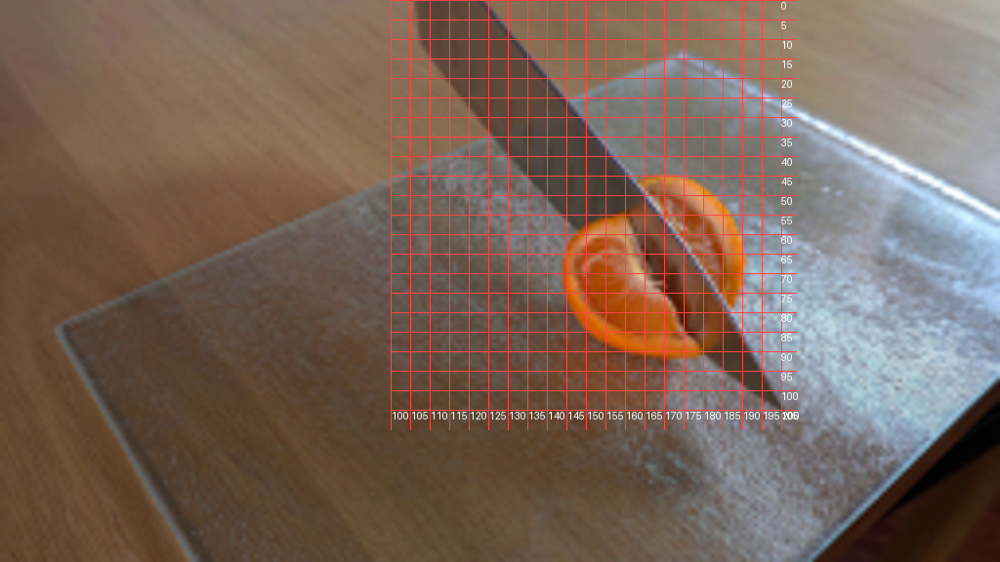
视觉工具实际返回图片 3
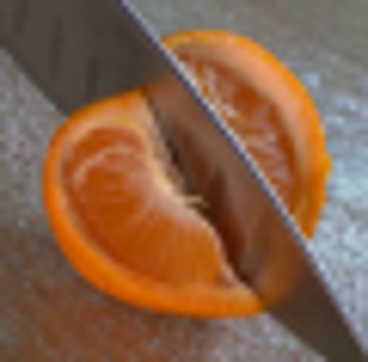
视觉工具实际返回图片 4
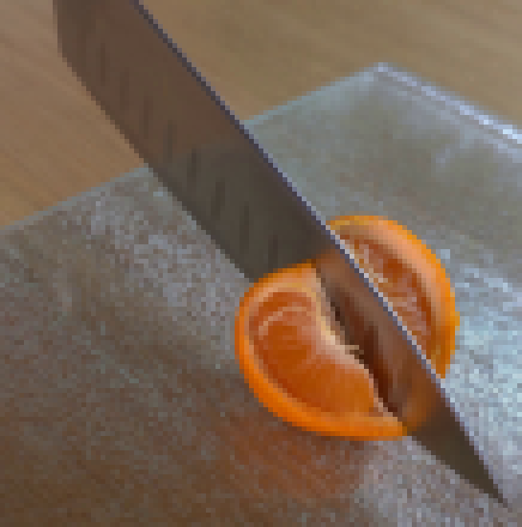
视觉工具实际返回图片 5
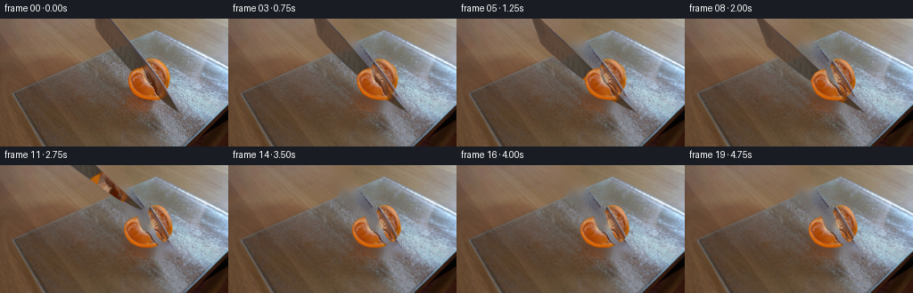
视觉工具实际返回图片 6
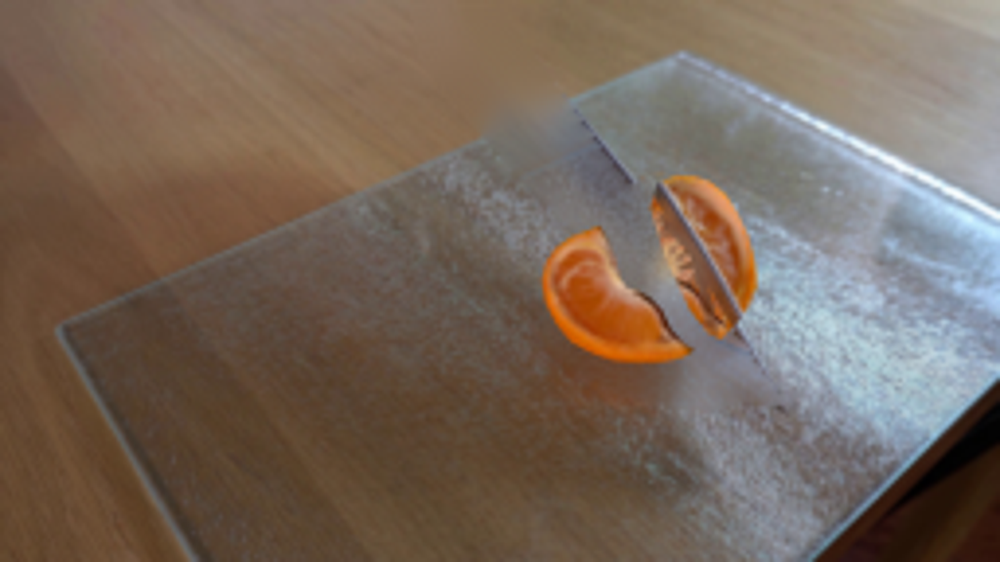
视觉工具实际返回图片 7
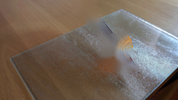
视觉工具实际返回图片 8
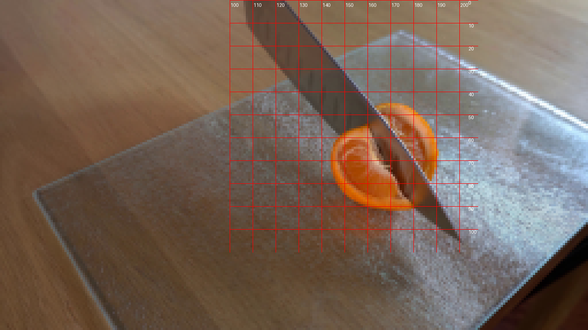
视觉工具实际返回图片 9
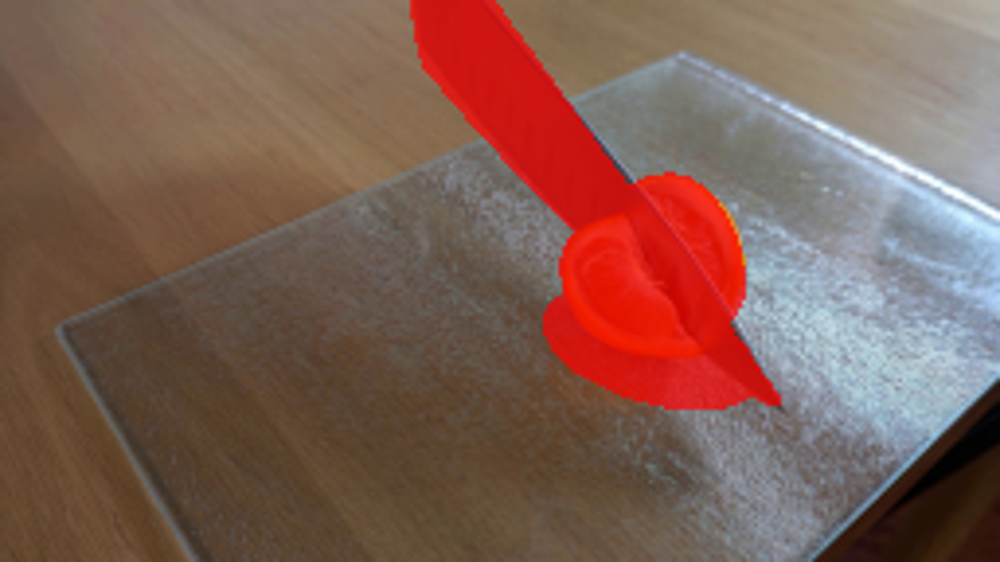
视觉工具实际返回图片 10
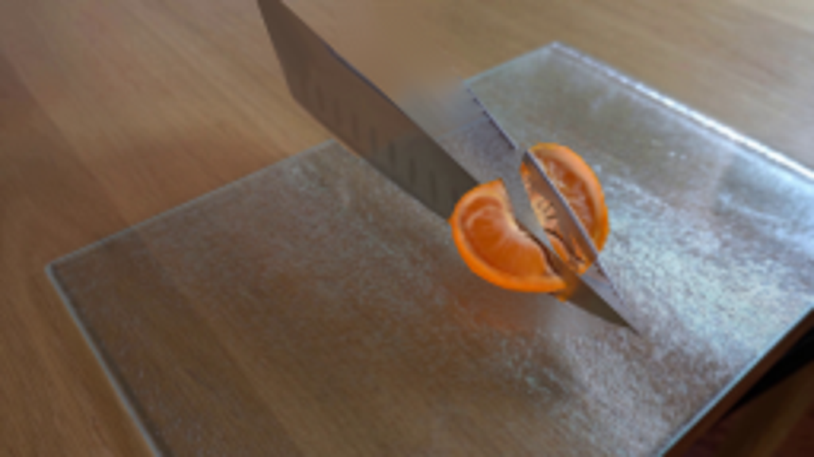
视觉工具实际返回图片 11

视觉工具实际返回图片 12
视觉工具实际返回图片 13
视觉工具实际返回图片 14
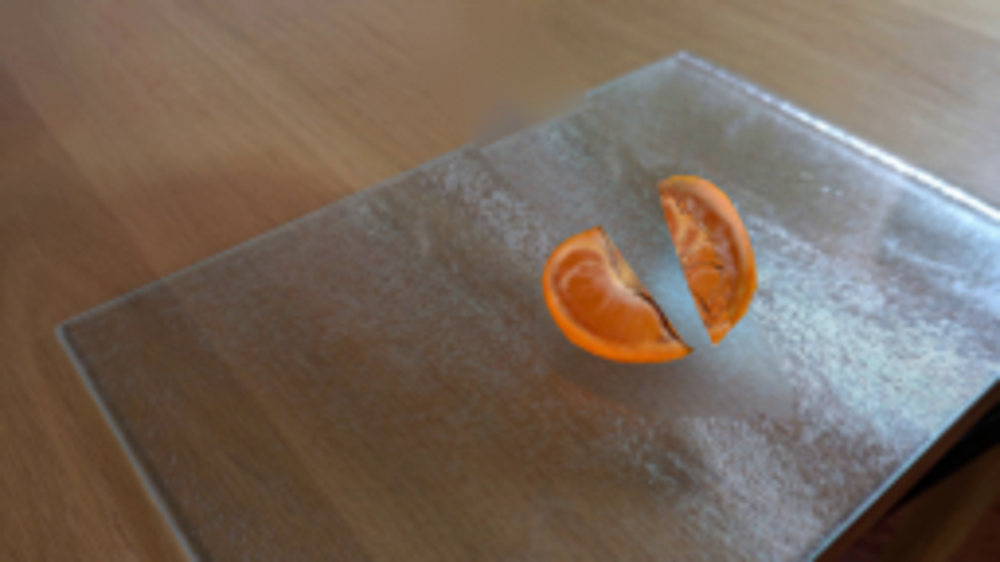
视觉工具实际返回图片 15
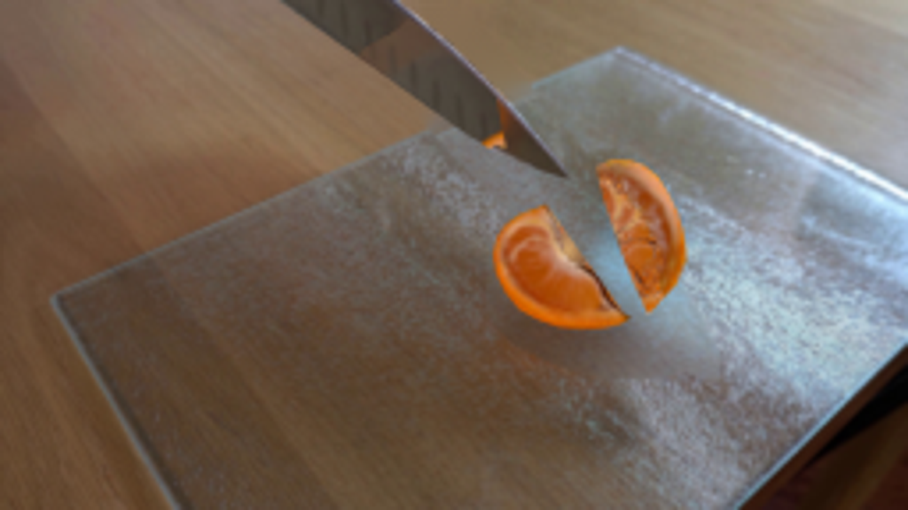
保存候选 7 份；完成命令 17 次；可验证图片返回 15 张。原始 API 响应与完整日志保留在本地。